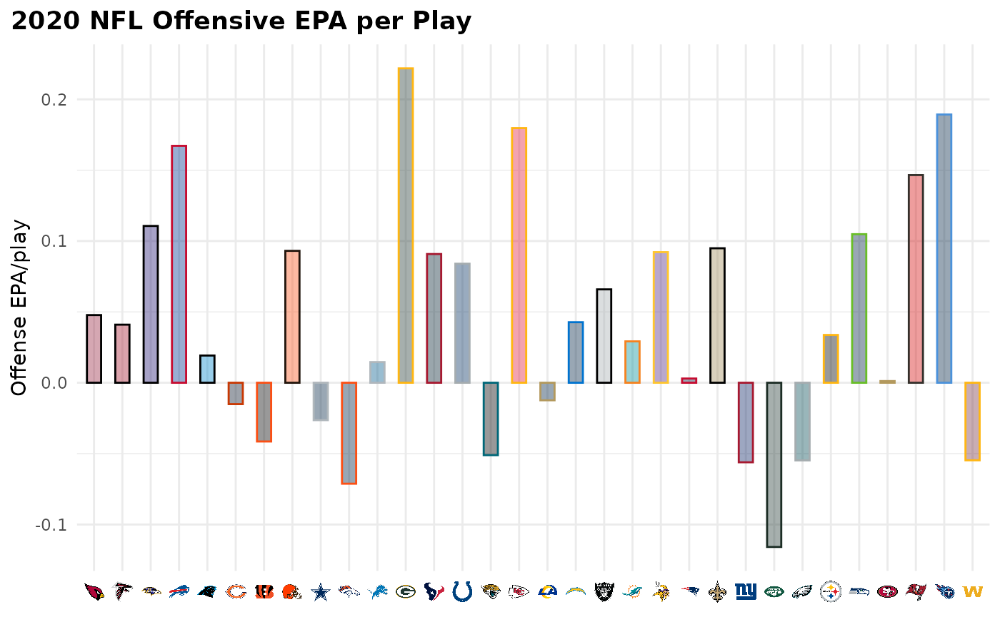
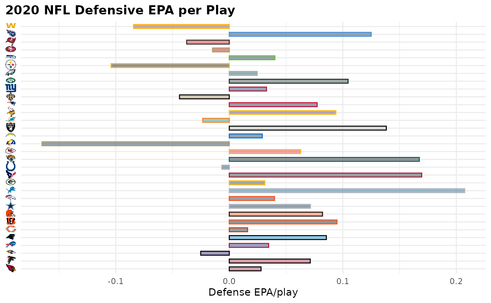
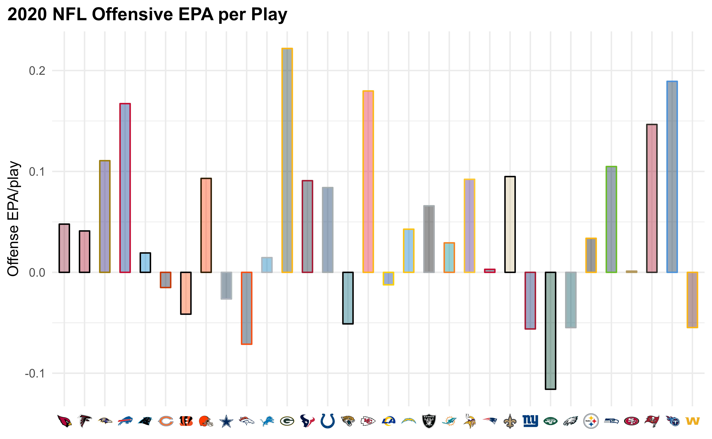

Working with publicly available NFL data often results in a desire to visualize the findings of one’s analyses (often in ggplot2) and then publish these visualizations. In team-level analyses, it appears that such visualizations are more aesthetically pleasing when their logos are used instead of team abbreviations. Another way to visually distinguish teams is to use their primary or secondary team colors.
nflplotR provides ggplot2 extensions that greatly simplify these tasks and avoid typical problems.
Long story short: the only thing that is required to use NFL team logos or team colors in a ggplot is a variable in the plot data that holds official NFL team abbreviations.
Let’s look at some typical use cases for nflplotR using NFL play-by-play data. In a first step we load all necessary packages.
We will load the data and compute each team’s offensive and defensive EPA per play for the 2020 regular season.
pbp <- nflreadr::load_pbp(2020) %>%
dplyr::filter(season_type == "REG") %>%
dplyr::filter(!is.na(posteam) & (rush == 1 | pass == 1))
offense <- pbp %>%
dplyr::group_by(team = posteam) %>%
dplyr::summarise(off_epa = mean(epa, na.rm = TRUE))
defense <- pbp %>%
dplyr::group_by(team = defteam) %>%
dplyr::summarise(def_epa = mean(epa, na.rm = TRUE))
combined <- offense %>%
dplyr::inner_join(defense, by = "team")Let’s start with the offense and build a bar chart using logos as axis labels and team colors as bar colors.
ggplot2::ggplot(offense, aes(x = team, y = off_epa)) +
ggplot2::geom_col(aes(color = team, fill = team), width = 0.5) +
nflplotR::scale_color_nfl(type = "secondary") +
nflplotR::scale_fill_nfl(alpha = 0.4) +
nflplotR::scale_x_nfl() +
ggplot2::labs(
title = "2020 NFL Offensive EPA per Play",
y = "Offense EPA/play"
) +
ggplot2::theme_minimal() +
ggplot2::theme(
plot.title = ggplot2::element_text(face = "bold"),
plot.title.position = "plot",
# it's obvious what the x-axis is so we remove the title
axis.title.x = ggplot2::element_blank()
) +
# this line triggers the download of the logos and calls a ggplot theme internally
# so it must be placed after a theme definition
nflplotR::theme_x_nfl()
#> Warning in png::readPNG(get_file(path), native = TRUE): libpng warning: iCCP:
#> known incorrect sRGB profile
Some notes:
scale_x_nfl() which replaces the team names with logo urls internally andtheme_x_nfl() which triggers the actual download of the logos.png package. It’s safe to ignore this.It is important to note that the call of theme_x_nfl() must be placed after a call to a global ggplot theme like ggplot2::theme_minimal() because they replace all current theme options.
We can do the same thing for the y-axis (now with defensive EPA per play)
ggplot2::ggplot(defense, aes(y = team, x = def_epa)) +
ggplot2::geom_col(aes(color = team, fill = team), width = 0.5) +
nflplotR::scale_color_nfl(type = "secondary") +
nflplotR::scale_fill_nfl(alpha = 0.4) +
nflplotR::scale_y_nfl() +
ggplot2::labs(
title = "2020 NFL Defensive EPA per Play",
x = "Defense EPA/play"
) +
ggplot2::theme_minimal() +
ggplot2::theme(
plot.title = ggplot2::element_text(face = "bold"),
plot.title.position = "plot",
# it's obvious what the y-axis is so we remove the title
axis.title.y = ggplot2::element_blank(),
) +
# this line triggers the download of the logos and calls a ggplot theme internally
# so it must be placed after a theme definition
nflplotR::theme_y_nfl()
#> Warning in png::readPNG(get_file(path), native = TRUE): libpng warning: iCCP:
#> known incorrect sRGB profile
Offensive and Defensive EPA per Play are typically used for NFL team tiers. Let’s create this scatter plot and play around with the capabilities of the logo geom.
ggplot2::ggplot(combined, aes(x = off_epa, y = def_epa)) +
ggplot2::geom_abline(slope = -1.5, intercept = seq(0.4, -0.3, -0.1), alpha = .2) +
nflplotR::geom_mean_lines(aes(v_var = off_epa , h_var = def_epa)) +
nflplotR::geom_nfl_logos(aes(team_abbr = team), width = 0.065, alpha = 0.7) +
ggplot2::labs(
x = "Offense EPA/play",
y = "Defense EPA/play",
caption = "Data: @nflfastR",
title = "2020 NFL Offensive and Defensive EPA per Play"
) +
ggplot2::theme_minimal() +
ggplot2::theme(
plot.title = ggplot2::element_text(face = "bold"),
plot.title.position = "plot"
) +
ggplot2::scale_y_reverse()
There is a lot going on here:
This is just a small overview and it is recommended to check the examples provided for each function.
If you are used to preview your plots in RStudio you will probably get a bit impatient if a lot of logos have to be added to a plot because the rendering can take a few seconds. This is what the nflplotR function ggpreview() is built for. It saves the plot in a temporary png file and previews it (in it’s actual dimensions). Please see the function documentation for further information.